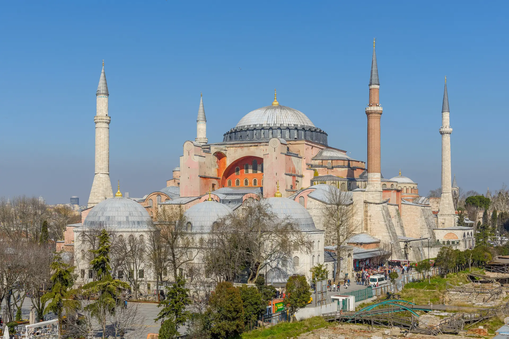

Estambul
La única ciudad que fue capital de dos imperios sin cambiar de sitio
Bizancio, Constantinopla y Estambul son la misma ciudad bajo tres nombres oficiales distintos: capital de dos imperios sin moverse nunca de sitio.
Bizancio, la colonia griega que empezó todo
La historia oficial arranca hacia el 667 a.C., cuando un grupo de colonos griegos de Megara cruza el Bósforo guiado por un colono llamado Byzas. La leyenda cuenta que antes de partir consultaron el oráculo de Delfos, que les recomendó fundar la ciudad «frente a la tierra de los ciegos» — una pista que solo cobró sentido al llegar: unos colonos anteriores habían fundado Calcedonia en la orilla opuesta, ignorando una posición muchísimo mejor a un paso de distancia. Byzas se quedó con ese sitio mejor y le dio su propio nombre: Bizancio.
Constantinopla: el nombre que ni su fundador quería
En el año 330, el emperador Constantino dedica sobre las ruinas de Bizancio la nueva capital del Imperio romano y la bautiza, oficialmente, «Nova Roma» — Nueva Roma. El nombre nunca cuajó: ya en vida de Constantino, todo el mundo prefería llamarla «la ciudad de Constantino» — Constantinopla. Con ese nombre no oficial pero universal, la ciudad fue durante más de mil años la capital del Imperio romano de Oriente, el que hoy conocemos como Imperio bizantino.
1453: cambia el imperio, no cambia la capital
El 29 de mayo de 1453, el sultán otomano Mehmed II toma Constantinopla y pone fin a más de mil años de continuidad bizantina. Lo insólito no es la conquista, sino lo que Mehmed decide hacer después: en vez de levantar una capital nueva en otro lugar, como habría hecho casi cualquier otro conquistador, se queda con la misma ciudad. Constantinopla pasa a ser, sin moverse un metro, la capital del Imperio otomano. Ningún otro lugar del mundo fue la sede de dos imperios tan distintos, uno detrás de otro, sobre el mismo terreno.
El nombre que ya usaba la calle mucho antes que el papel
Durante casi cinco siglos de dominio otomano, los documentos y las monedas oficiales siguen usando «Kostantiniyye», una forma otomana de Constantinopla. En la calle, mientras tanto, corre desde hace generaciones un nombre más corto y coloquial: Estambul. El Imperio otomano se disuelve en 1922 y la nueva República turca nace en 1923 con la capital trasladada a Ankara: por primera vez desde el año 330, la ciudad deja de ser la capital de nadie. Recién en 1930, ya sin ese título, el gobierno de Atatürk formaliza lo que la calle llevaba diciendo generaciones: decreta que el nombre oficial y único pasa a ser Estambul.
¿De dónde sale «Estambul»? La teoría con más peso
La palabra «İstanbul» generó varias hipótesis. Una es una etimología popular otomana, «İslambol» («llena de islam»), que ya recogía como nombre corriente el viajero otomano Evliya Çelebi en el siglo XVII — pero que la lingüística moderna no respalda como origen real de la palabra. La teoría con más consenso académico apunta en otra dirección, mucho más antigua y bastante menos religiosa: derivaría de la expresión griega medieval «eis tin polin» (εἰς τὴν πόλιν), que significa, simplemente, «hacia la ciudad» o «a la ciudad». Para los griegos que vivían alrededor de Constantinopla, esta era sencillamente «la Ciudad» — no hacía falta llamarla de otra forma —, y esa expresión tan repetida se fue deformando en boca de hablantes turcos hasta convertirse en «İstanbul». Si la hipótesis es correcta, el nombre que hoy suena más turco de los tres es, en su raíz, tan griego como el propio Bizancio.
Sultanahmet es el barrio donde esas tres ciudades se pisan literalmente unas a otras: trazado bizantino bajo el suelo, mezquitas otomanas por encima y el nombre turco en cada cartel de calle. La serpiente de Constantinopla recorre esa superposición a pie, parada a parada, por los mismos puntos exactos donde una capital se convirtió en la siguiente sin mudarse nunca de sitio.